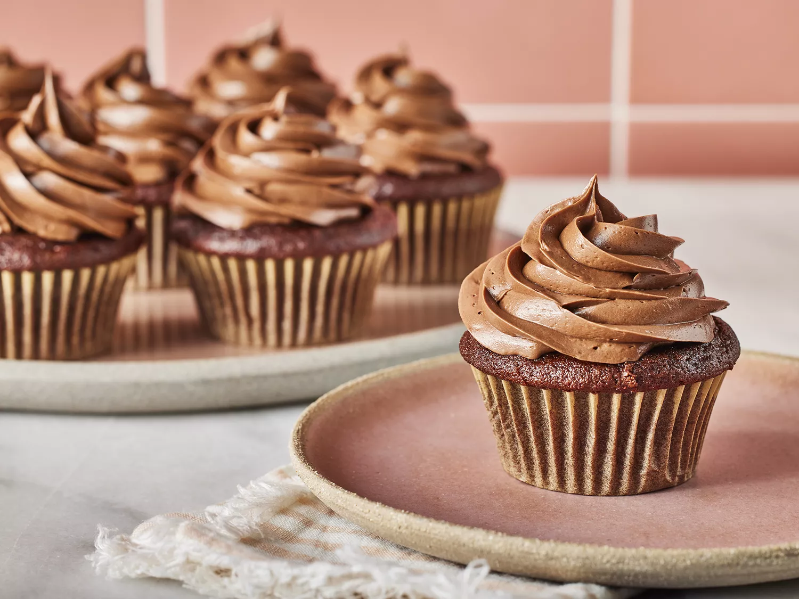

Chocolate Cupcakes

Description
Skip the boxed chocolate cupcake mix — homemade chocolate cupcakes are just as easy to make (and even more delicious). In just 30 minutes, you'll have rich and moist chocolate cupcakes ready to serve for your next holiday, party, or potluck. Be prepared to have everyone asking you for this decadent chocolate cupcake recipe!
Ingredients
- Salt
- Leavening Agents
- Milk
- Eggs
- Vanilla
- Butter
- Sugar
- Flour
- Cocoa Powder
- Cocoa
Steps
- Sift the dry ingredients (except the sugar) together.
- Cream the butter and sugar together. Then add the eggs and vanilla.
- Alternate adding the dry ingredients and milk.Beat until well combined.
- Spoon batter into prepared cupcake cups — only fill the cups ¾ of the way full so they don't overflow in the oven
- Bake until a toothpick inserted in the center comes out clean. Frost as desired.